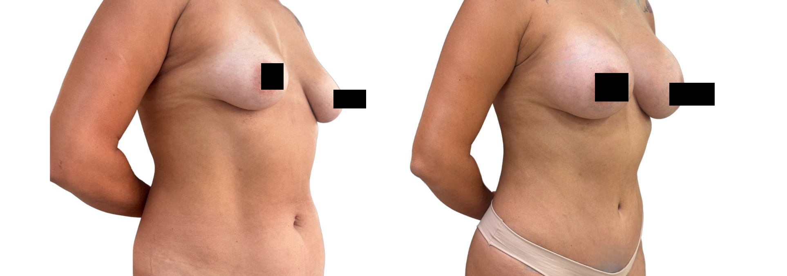

Aumento de volume
Quando a paciente deseja mais volume, preenchimento ou melhor proporção entre mama, tórax e corpo.
A cirurgia de aumento mamário com prótese busca harmonizar volume e proporção corporal, respeitando anatomia, pele, medidas do tórax e o estilo de vida de cada paciente.
Atendimento na Clínica LIV Faria Lima, em Pinheiros. Consulta presencial e teleconsulta em casos selecionados.

A indicação considera base mamária, espessura dos tecidos, elasticidade da pele, assimetrias e o resultado desejado. A consulta ajuda a entender até onde vale aumentar sem perder proporção.
Quando a paciente deseja mais volume, preenchimento ou melhor proporção entre mama, tórax e corpo.
Pode ajudar em alguns casos de perda de volume ou diferença entre as mamas, desde que haja indicação técnica.
Volume, perfil, base e plano de colocação são definidos a partir da anatomia, não de um padrão único.
Um implante maior do que a anatomia comporta pode aumentar risco de artificialidade, queda, desconforto ou pele tensionada. A escolha busca equilíbrio entre desejo, biotipo e segurança.
Antes de escolher volume, é preciso entender se a mama precisa apenas de preenchimento ou também de reposicionamento.
Melhora volume e proporção quando a pele e a posição da mama permitem.
Trata queda e excesso de pele quando volume não é a principal queixa.
Ver mastopexiaAssocia elevação e preenchimento quando há queda e desejo de volume.
Ver associação
Na consulta são discutidos volume, perfil, plano de colocação, cicatriz, simetria e recuperação. O objetivo é escolher uma estratégia segura, coerente e alinhada ao que a paciente procura.
Entender incômodo, rotina, objetivos e expectativas.
Avaliar anatomia, pele, cicatrizes possíveis e proporções.
Discutir técnica, alternativas, limites e associações.
Orientar exames, preparo, recuperação e orçamento.
A Dra. Amanda Schroeder é cirurgiã plástica, CRM-SP 191605 e RQE 110472, com formação pela UNICAMP e atuação voltada a indicações criteriosas, naturalidade e segurança. Antes de indicar uma cirurgia ou procedimento, busca entender o que incomoda, o que deve ser preservado e quais são os limites reais de cada caso.
O atendimento acontece na Clínica LIV Faria Lima, próxima à Estação Pinheiros do metrô e com estacionamento pago no local. A estrutura foi pensada para oferecer acolhimento, privacidade e clareza nos próximos passos — da avaliação inicial ao preparo pré-operatório, incluindo avaliação cardiológica integrada quando indicada.
A avaliação considera medidas do tórax, base mamária, espessura dos tecidos, simetria, perfil do implante, plano de colocação, cicatriz e exames pré-operatórios. Para cirurgias realizadas pela clínica, a avaliação cardiológica pode integrar o protocolo da LIV.
As fotos ajudam a ilustrar planejamento e cicatrização, mas cada resultado depende de anatomia, técnica, recuperação e cuidados pós-operatórios.

Imagem educativa de resultado mamário, sem garantia de resultado individual.
Imagens autorizadas e tratadas para privacidade. Não representam garantia de resultado individual.
Em alguns casos, a prótese isolada não corrige ptose ou excesso de pele. A consulta ajuda a diferenciar aumento mamário, mastopexia com prótese, mastopexia isolada ou redução.
A escolha considera base da mama, tórax, espessura dos tecidos, pele, perfil do implante e desejo da paciente. O objetivo é evitar exageros e preservar proporção.
Quando há queda significativa, a prótese isolada pode não ser suficiente. Nesses casos, mastopexia ou mastopexia com prótese podem ser discutidas.
Volume é a quantidade em mililitros. Perfil e projeção definem como esse volume se distribui. A combinação influencia naturalidade e proporção.
Sim. A via de acesso depende da anatomia, preferência técnica, tipo de implante e planejamento da paciente.
Não existe uma troca obrigatória em prazo fixo para todas as pacientes, mas implantes exigem acompanhamento e podem precisar de troca em situações específicas.
Ao enviar uma mensagem, a equipe entende sua queixa principal, orienta sobre o formato da consulta e informa os próximos passos com discrição. A avaliação pode ser presencial em Pinheiros ou, em casos selecionados, por teleconsulta inicial. O atendimento é particular; a equipe informa valores da consulta, disponibilidade, nota fiscal e próximos passos.
Você informa o que deseja avaliar e há quanto tempo isso incomoda.
A equipe explica consulta, agenda, valores e emissão de nota fiscal.
Na consulta, a Dra. Amanda define indicação, limites, segurança e próximos passos.
Envie uma mensagem para contar sua queixa principal e receber orientação sobre consulta presencial em Pinheiros ou teleconsulta inicial em casos selecionados.